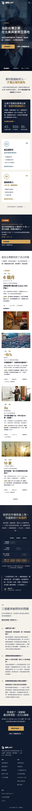
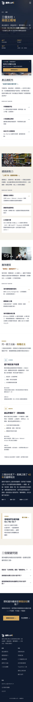
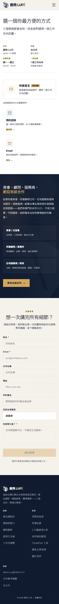
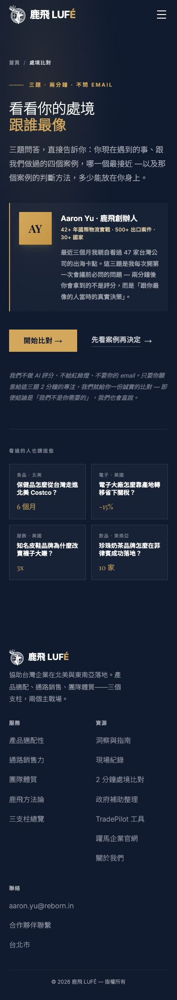
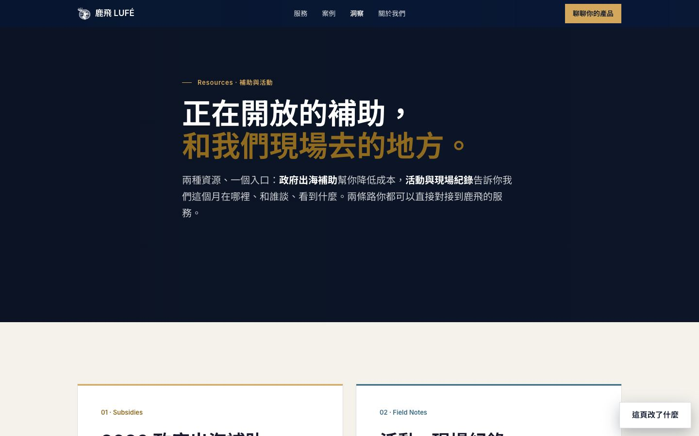
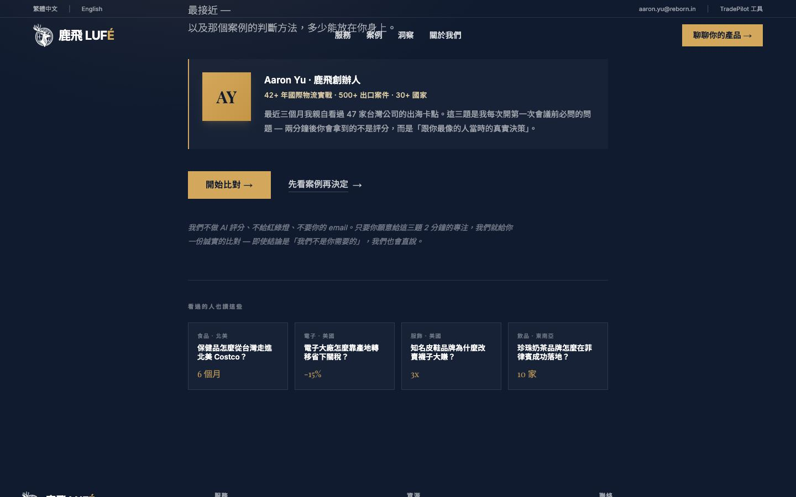

手機版左邊是正式站（截圖，可以上下捲），右邊是方正版提案（真的網頁，可以捲、可以點，包含選單和表單）。
目前所有對照都是用電腦畫面做的，這裡補上手機。挑客人最常走的四頁。
正式站

方正版（可操作）
正式站

方正版（可操作）
正式站

方正版（可操作）
正式站

方正版（可操作）
之前我判斷「跟正式站只差全站共用做法」就直接定案了，這裡補給你看。

還沒開始答題前，頁面下方「看過的人也讀這些」那四個案例。

你選了「每則筆記一個獨立網頁」，這是真正的頁面（可操作，試試下面的上一則／下一則）。
桌機寬度縮小顯示
手機